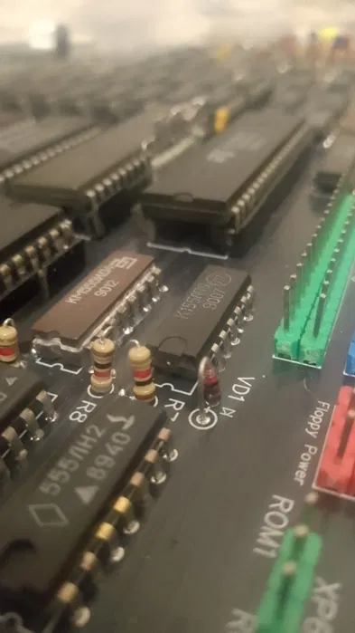

Pentagon 128 — це легендарний клон ZX Spectrum, який став стандартом для демосцени завдяки своїм унікальним таймінгам.
Багато культових демо створювались саме під Pentagon, і лише на ньому вони працюють так, як задумано авторами.
Ця версія вже зібрана і протестована, тому ви отримуєте готовий інструмент без необхідності пайки чи налаштувань.
Оснащений AY звуком, що відкриває доступ до повноцінного музичного супроводу в іграх і демо.
Це вибір для:
• демосцени та фанатів ефектів
• максимального “правильного” Spectrum досвіду
• колекціонерів і ентузіастів
Якщо хочеш бачити демо так, як їх задумували — це Pentagon.
